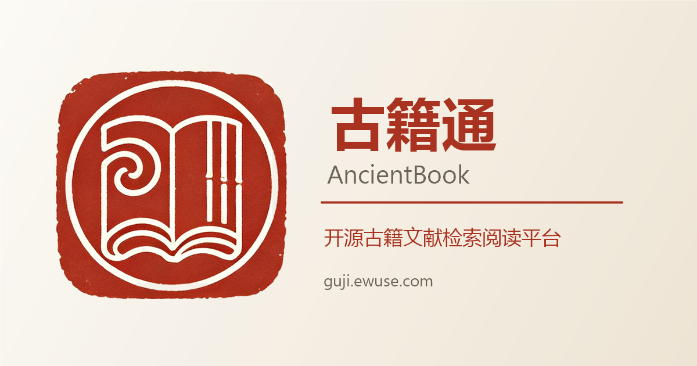

古籍通｜组件库规范 Wireframes
版本：V2.0｜全部组件严格遵循 UI/UX 全局设计规范，禁止私自修改样式参数
一、基础组件
1.1 按钮 Button 圆角6px高度32-40px
Default
Hover
Active
Disabled
Secondary
Ghost
使用规则：primary 用于确认/搜索主操作；secondary 普通操作；ghost 用于返回/次要跳转；disabled 不可交互。
Hover 微透明 0.9，Active 缩放 0.97，过渡 0.2s。点击区域最小 40×32px，移动端 ≥44px。
1.2 输入框 Input 聚焦主色描边
聚焦态：主色描边 + 2px 主色柔光（box-shadow rgba(140,49,48,0.12)）；禁用态 opacity 0.5。
1.3 搜索框 Search 输入框+主按钮组合
1.4 标签 Tag 圆角4px
默认标签Default
悬停标签Hover
选中标签Active
1.5 单选下拉 Select 检索筛选使用
二、复合组件
2.1 卡片 Card hover上浮3px
儒藏
儒家经典 · 修齐治平，共收录 6 部典籍
已下架馆藏
Disabled 状态展示
hover：translateY(-3px) + 0.06 低阴影；active：translateY(-1px)。卡片圆角 6px。
2.2 面包屑 Breadcrumb
2.3 列表项 Book-Item hover左移8px
儒
论语
史
史记
2.4 检索结果项 Search-Result-Item 命中高亮
2.5 空状态 / 加载状态
未找到相关内容
请尝试更换关键词或减少筛选条件
骨架屏：加载状态，shimmer 1.2s 循环
三、业务组件（古籍通专属）
3.1 馆藏分类卡片 Category-Card
儒藏
儒家经典 · 修齐治平 · 6 部
医藏
医学方书 · 济世活人 · 5 部
3.2 人物档案卡片 Character-Card
孔子字仲尼 · 孔丘
春秋
鲁国陬邑
公元前551年 — 公元前479年
鲁国大司寇
思想家教育家儒家
3.3 关系项 Relation-Item
孔子师生颜回
颜回为孔子最得意门生，孔子赞其「贤哉回也」。
📖 史料出处：《论语·先进》《史记·仲尼弟子列传》
3.4 阅读工具栏 Reader-Toolbar 字号/行距/章节/进度
四、组件尺寸与规范速查表
| 类别 | 组件 | 关键规范 | 状态要求 |
|---|---|---|---|
| 基础 | 按钮 | 圆角6px；高32/40px；间距8-16px | default/hover/active/disabled 四态 |
| 基础 | 输入框 | 内边距10px 12px；聚焦主色描边+柔光 | default/focus/disabled |
| 基础 | 标签 | 圆角4px；字号13px | default/hover/active |
| 复合 | 卡片 | 圆角6px；hover上浮3px+低阴影 | default/hover/active |
| 复合 | 列表项 | 底部1px分割线；hover左移8px | default/hover |
| 复合 | 检索结果 | 命中高亮；路径+评分徽标 | default/hover |
| 业务 | 馆藏卡片 | 图标52px圆形；hover反色 | default/hover |
| 业务 | 人物档案 | 结构化字段；标签组展示 | default/hover |
| 业务 | 阅读工具栏 | 按钮28×28px；主色反馈 | default/hover/active |
五、组件使用强制规则
- ① 所有组件优先复用全局组件库，禁止重复写独立样式；
- ② 颜色全部使用 CSS 变量（var(--color-*)），禁止写死色值；
- ③ hover、active、disabled、focus 四态必须完整实现；
- ④ 移动端所有组件点击区域 ≥44px；
- ⑤ 三套主题（日间/护眼/深色）下组件表现必须全部兼容；
- ⑥ 禁止增加多余装饰、阴影、动画（仅允许 hover 微效与骨架屏）；
- ⑦ 正文一律衬线字体（Noto Serif SC），UI 控件可无衬线；
- ⑧ 间距遵循 8/16/24px 三级规范，禁止随意改值。
六、品牌资料（Logo / 图标 / 分享图）v1.2.3
品牌资产由 scripts/brand/build-brand-assets.ps1 一键生成，线上存于 public/brand/，原型副本存于
assets/brand/；均为脚本产物，禁止手工改图。规范详见
docs/05-设计规范与原型/品牌资料使用规范.md。
横版 Logo（比例 2.692 : 1）
方形印章图标
64px · 浏览器图标
32px · favicon
16px · 极小尺寸
180px · 纸底实心（主屏）
品牌色板
主色 #A93320
纸色 #F7F3EA
主色用于品牌资产与 OG 图；UI 控件沿用 CSS 变量 --color-primary: #8C3130，两者不互相覆盖。
社交分享图（1200×630）

| 文件 | 规格 | 使用场景 |
|---|---|---|
| logo-full-{1024,512,256}.png | 横版 2.692:1，透明底 | 导航栏、README、文档（浅色底） |
| logo-full-light-{512,256}.png | 横版，深色转米白 | 深色主题导航栏、深色海报 |
| logo-mark-{512…16}.png | 方形印章，透明底 | favicon、通用图标 |
| logo-mark-solid-180.png | 180×180，纸色实心底 | iOS 添加到主屏 |
| logo-mark-maskable-512.png | 512×512，印章占 62% | Android 自适应图标（安全区） |
| og-image.png | 1200×630 | Open Graph / Twitter Card 分享卡片 |